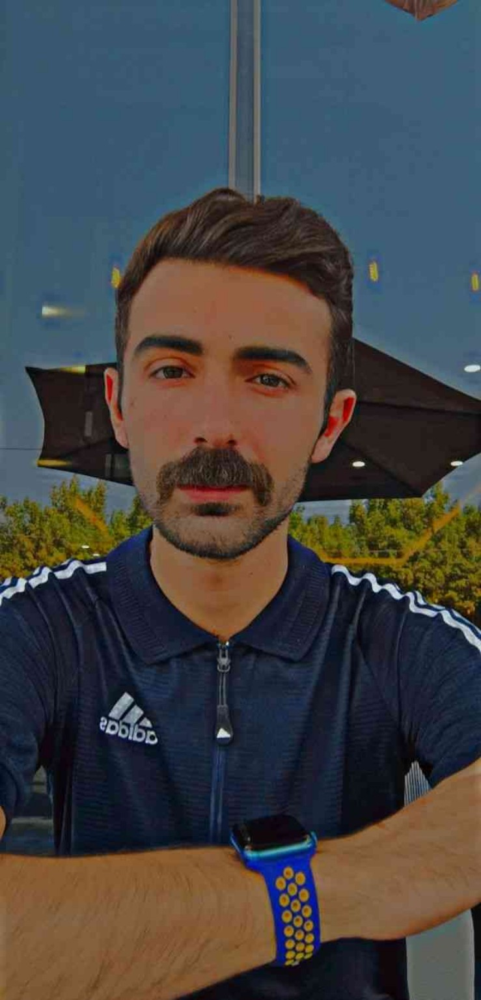

Hamza Ahmad Ali
Hospitality Supervisor & Dining Room Captain
Over 9 years of experience in restaurant operations, guest services and team leadership across the Middle East.

Professional Summary
Hospitality Supervisor and Dining Room Captain with over 9 years of experience in restaurant and guest-service operations across Syria, Lebanon, the UAE, and Iraq. Experienced in supervising front-of-house teams, coordinating daily operations, preparing staff schedules, monitoring guest satisfaction, and maintaining service and food-safety standards.
Professional Experience
Oversee daily operations, assign staff duties, prepare work schedules, monitor guest satisfaction, and maintain high customer-service standards.
Supervised dining-room operations and coordinated service teams with the kitchen; monitored order accuracy, table readiness and guest feedback; supported upselling and staff training in customer service and food safety.
Managed dining-room operations, welcomed VIP guests, maintained hospitality standards, responded to guest feedback, and supported a positive dining experience.
Previous workplaces: Karam Baghdad Restaurant, Helm Beirut, Ward Restaurant, Ni Cafe Hookah Village, Ayoun Baghdad, Abu Shakra Restaurant, Amanos Restaurant, Makhlouf Samir Restaurant, Anana Plaza, Willow Spring, Holiday Beach.
Skills
Education
Languages & Recognition
Contact Me
Available for opportunities and collaboration in hospitality and restaurant management.
Email: hamza3332hamza@gmail.com
Location: Jbeil, Lebanon
Professional references available upon request.